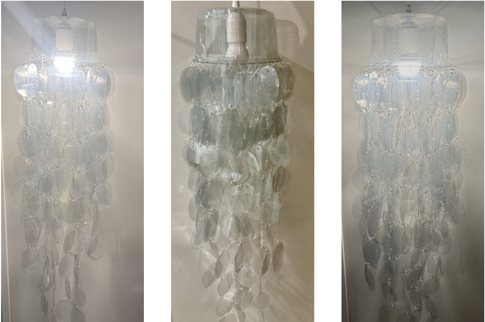

Diseño de producto · Sostenibilidad
Let There Be Light!
Una lámpara construida a partir de envases plásticos reutilizados que transforma un objeto cotidiano de un solo uso en una pieza funcional de iluminación.

Contexto
El encargo consistía en diseñar una lámpara utilizando materiales reciclados con el objetivo de dar una segunda vida a objetos que normalmente se desechan.
Para el proyecto se eligieron bowls de plástico para ensalada, ya que son envases comunes, ligeros y versátiles.
Proceso
Los bowls se transformaron en pequeños círculos de plástico conectados mediante argollas metálicas. Las piezas se organizaron en tiras de diferentes longitudes alrededor de una estructura central.
El proceso combina reutilización de materiales, experimentación manual y una búsqueda de ligereza visual.
Resultado
El resultado es una lámpara colgante que demuestra cómo un residuo cotidiano puede convertirse en una pieza estética y funcional mediante una intervención sencilla.
Ficha técnica
- Disciplina
- Diseño de producto sostenible
- Materiales
- Plástico reciclado, argollas metálicas y luz LED
- Contexto
- Proyecto académico individual